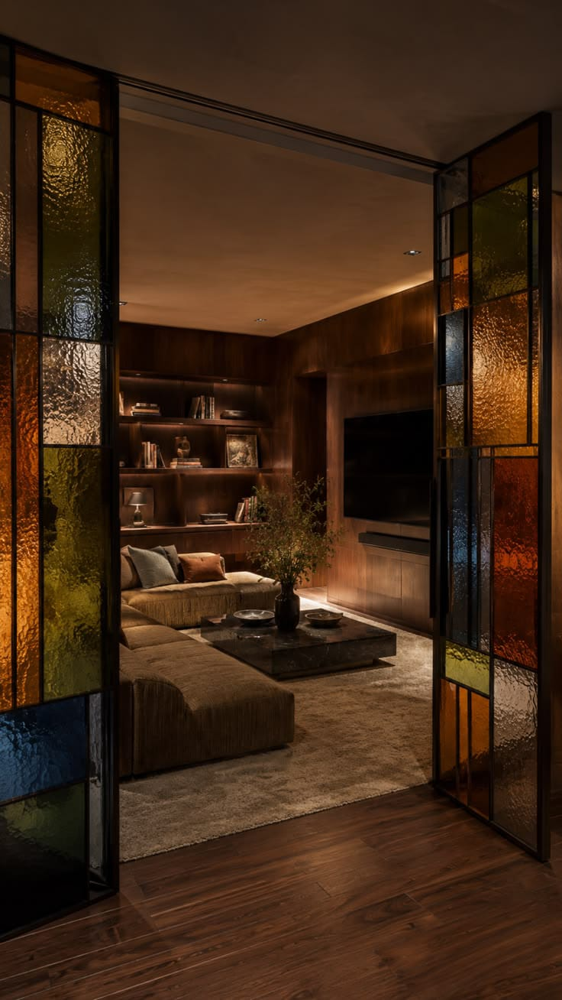
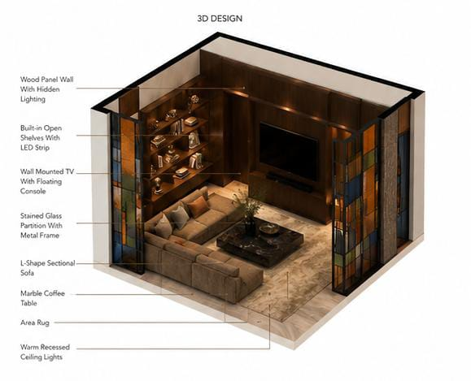
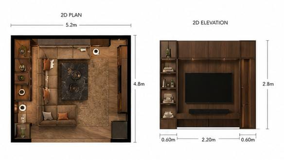
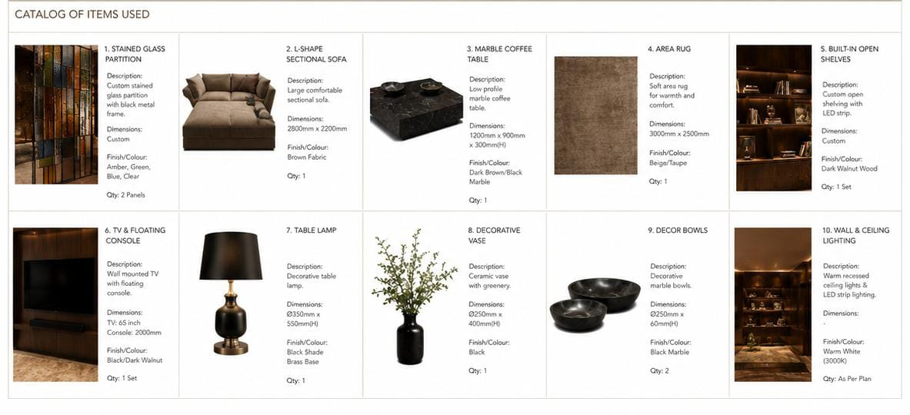
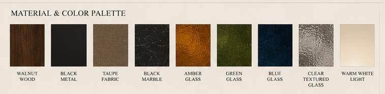

Remembering the 90's takes me back to a time where color proved the Earth was inhabited,
that we live, we breathe and we yearn for all that is more.
The art of expression, that is color.
That is my internal design compass.
"The warm encapsulation of my fanatica"
An elegant piece my clientel suggested but just between us, I've dreamt of doing this for years now
The deep timber tones grounding the room like the earth,
amber,green,blue and smoky glass panels introduce the vibrancy and complexity I associate with visual
African culture.Its distortion and fractured colors create movement, almost like looking through
different memories.
I call it a Mosaic of Mirrors, this piece made me look into myself in a different way.
Thats just how much my work means to me.

To bring this project to life I initially had to come up with the floor plan
my client explained what they expected, their wants, their dislikes and exactly how they would want it to feel
the process was magnificent and honestly one of my favorite pieces to have worked on.
I found myself excited, like my kiddy self while working on this piece.
The 3D design provides a realistic visualization of the proposed living space,
showing the spatial arrangement, furniture placement, lighting, finishes and overall atmosphere.
It demonstrates how the dark timber, coloured textured-glass partitions,
warm lighting and contemporary furniture work together to create a luxurious yet edgy Kenyan-inspired interior

The 2D design communicates the technical arrangement of the space through a floor plan and elevations.
It shows the room dimensions, circulation, furniture positioning, stained-glass partition, TV wall, shelving and other fixed elements,
providing a clear guide for construction and installation.

The catalogue identifies the main furniture, fixtures and decorative elements incorporated into the design.
It includes the sectional sofa, marble coffee table, area rug, stained-glass partitions, TV console,
built-in shelving, decorative objects, lighting fixtures and accessories, together with their materials,
finishes, dimensions and quantities.

The material selection combines dark walnut wood, black metal, textured coloured glass, black marble,
taupe/brown upholstery, wool-blend carpeting and antique-brass accents. Warm LED lighting and natural decorative elements soften the darker
finishes, while the amber, green, blue and clear glass introduce colour and visual complexity, reinforcing the contemporary African identity of the space.

I have an unbridled joy for nature.
Having a little bit of outside-inside just puts a joy in me,
The Kenyan landscape, deep rooted colors
I love to mix the boho lifestyle with the ever modern minimalist
A contrarian you could call me, an I love every second of it.